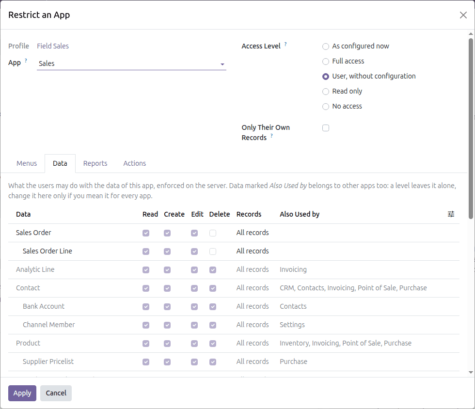
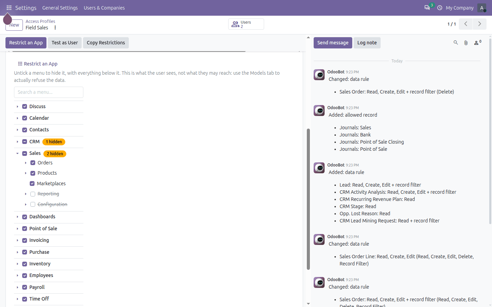
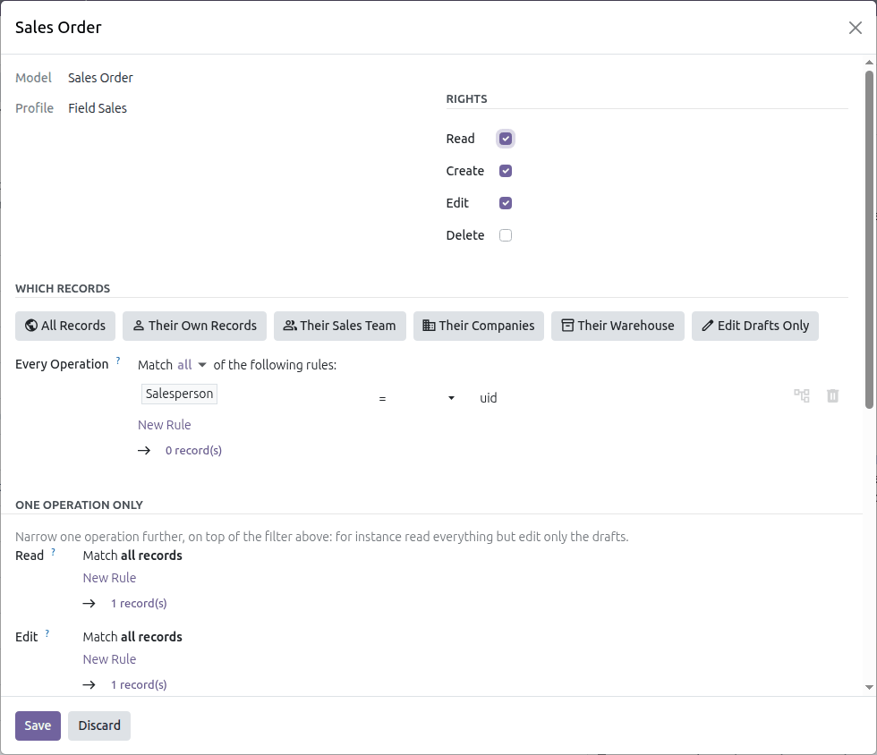
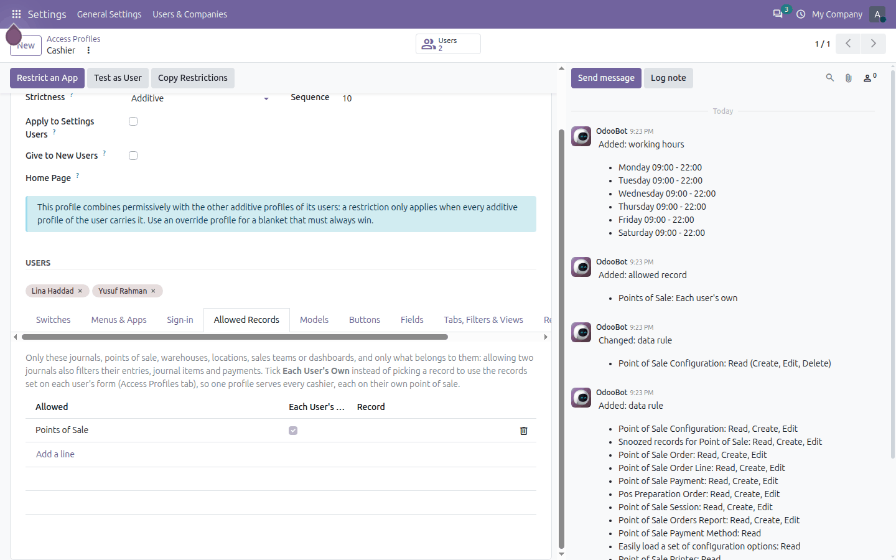
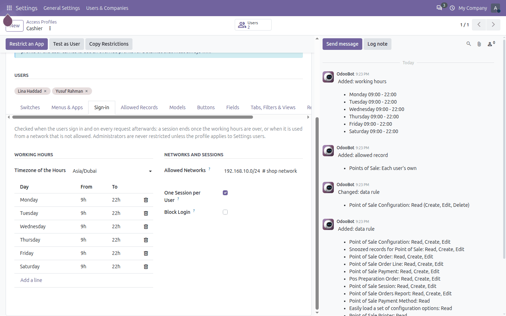
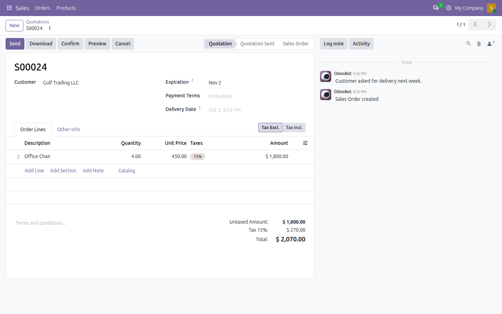
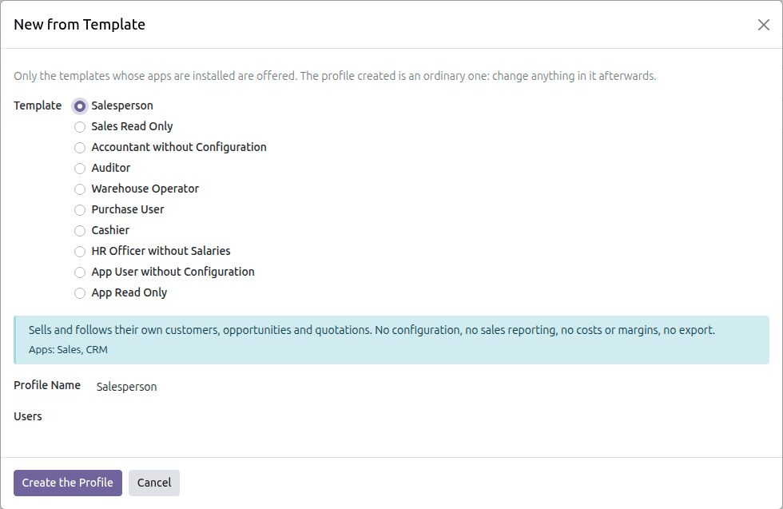
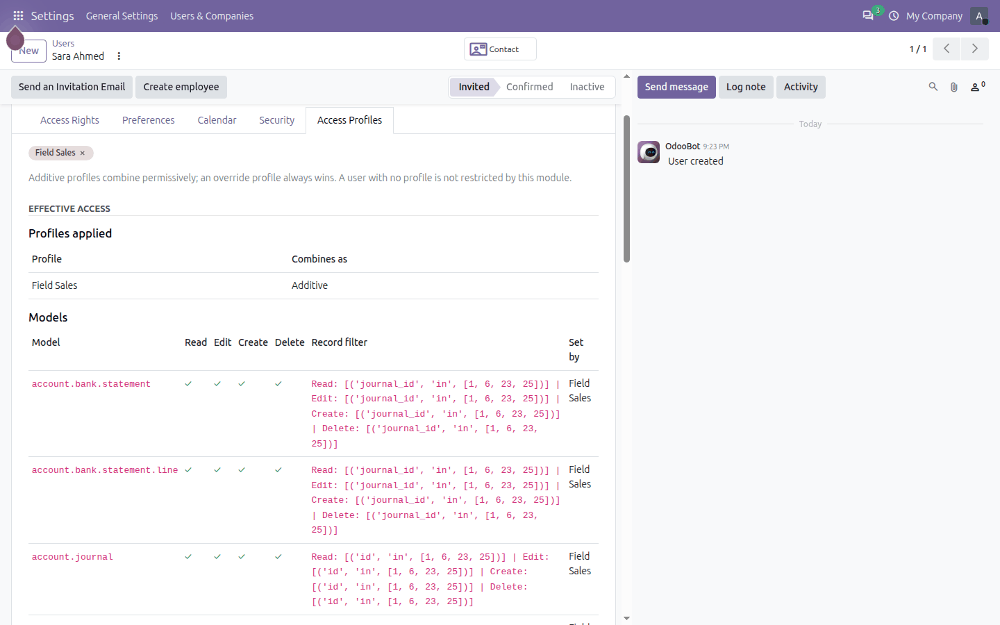
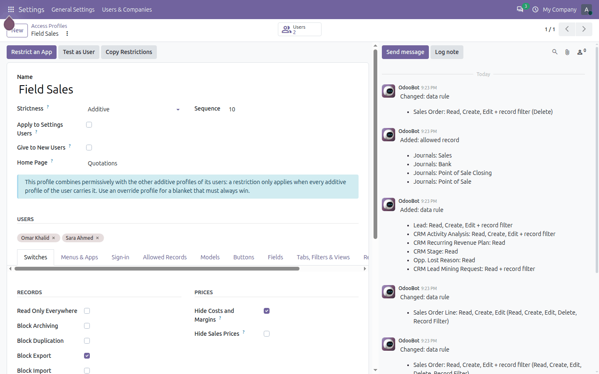

Decide, for each group of employees, what they see and what they do not: the apps and menus, the data and which records of it, the fields, the buttons, the reports and the actions, and when and from where they sign in. From one screen, without writing code, and enforced on the server.
Group users into access profiles. A user may carry several: they combine like Odoo groups, and an override profile always wins, for a blanket such as "Read Only" stacked on top. A user with no profile is not restricted at all.
Pick an app: its menus, its data, its reports and its actions are listed with a checkbox each. An access level (full, user without configuration, read only, no access) ticks them for you. Data the app shares with other apps, such as customers, is marked and never changed by a level.

Sales, at the level "User, without configuration".
Untick a menu to hide it with everything below it. A half-ticked app has some of its menus hidden, and says how many.

Sales without Reporting and Configuration, CRM without its configuration.
Every kind of data has its rights and its filter. The buttons write the usual filters for you, offered only when the data has what they need; Odoo's filter editor does the rest.

Quotations: no delete, and only their own.
Pick them by name. Everything that belongs to them follows: allowing two journals also filters their entries, journal items and payments. Tick Each User's Own to read them from each user's form instead.

One Cashier profile; each cashier sees only their own point of sale.
Working hours per day in the timezone of the profile, allowed networks, one session per user. Checked at sign-in and on every request: a session ends when the working hours are over.

Cashiers: Monday to Saturday, 09:00 to 22:00 Dubai time, from the shop network only.
The salesperson only has the Orders and Products menus of Sales, only their own quotations, no costs or margins anywhere, and no Send message in the chatter.

A quotation seen by a salesperson: no margin, no cost, Log note only.
A salesperson, sales read only, an accountant without configuration, an auditor, a warehouse operator, a purchase user, a cashier, an HR officer without salaries, and for any app a user without configuration or a read-only user. Only the templates of the apps you have installed are offered.

The profile created is an ordinary one: change anything in it afterwards.
The user form shows the effective access of the user, all of their profiles combined, and which profile set each line.

Rights and record filters, model by model.
Every change of a profile, of its switches and of its lines is logged in its chatter.

Lines added, changed and removed, by whom.
Access profiles only take access away: a user never gets more than their Odoo groups allow.
Is a hidden field really hidden?
Yes. It leaves the screens, and the server blanks its value in everything a user, the browser console or a script reads, and refuses to filter, group or export on it.
Can a user carry several profiles?
Yes. Additive profiles combine permissively, like Odoo groups; an override profile always applies. Test as User shows the result.
Can I move my profiles to production?
Yes: export them from the test database and import them on production. What production lacks is listed on the profile.
It is a beta: can I use it?
Yes, with the usual care: try your profiles on a copy of your database first. Reviews, bug reports and ideas are welcome; they decide what comes in the first stable release.
What happens when I uninstall it?
Every restriction disappears with it: the module only subtracts access, it never changed your groups.